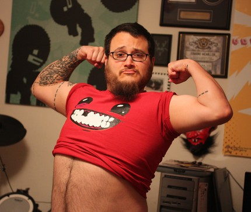

The Binding of Isaac


http://edmundm.com/
Leikirnir
The Binding of Isaac er fyrsti leikurinn í þessari "seríu" og hann var gefinn út 28. September 2011. Hann fjallar um krakka sem heitir Isaac sem þarf að fara niður í kjallarann undir húsinu sínu eftir að móðir hans vill drepa hann eftir að hafa heyrt "rödd Guðs" sem segir henni að hún ætti að drepa son sinn.
The Binding of Isaac: Rebirth er seinni leikurinn og hann er með sama söguþráð og fyrsti leikurinn. Hann er næstum því sami leikurinn nema með rosalega mikla myndræna uppfærslu og uppfærslu við bardaga systemið og það er líka bætt við helling af nýjum items í auk við öll itemin úr fyrsta leiknum.
Edmund McMillen
Edmund McMillen er höfundur leiksins, hann er 36 ára, fæddur 2. Mars 1980 og hann er líka höfundur Super Meat Boy.